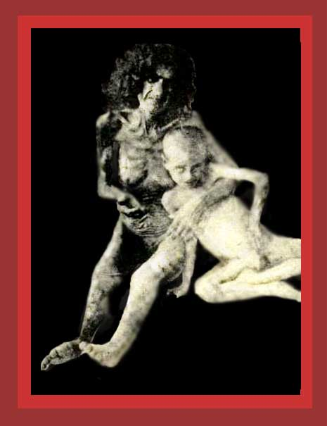

|
From 1900 to 1923, under Sultan Abdul Hamid, and the Young Turk and Nationalist governments of Turkey, over 2,000,000 Armenians and about 347,000 Greeks were murdered. This photo shows one widely used method of the Young Turk regime: starvation in the desert. Combat aged Armenian men were simply shot or otherwise murdered rapidly. Then women, their children, and the old were driven in guarded columns toward the desert, raped and harassed as they went. They either died on the way from starvation and thirst, were killed by guards, or died when they reached and were corralled in the desert. One of these Armenian women and her child are shown begging for food in the photo here. They cannot have long to live. Documentation: see Death By Government and Statistics of Democide. Source: "The Armenian Genocide". |